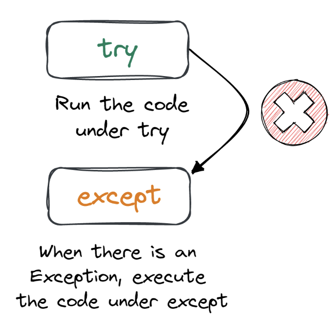

Error Handling in Python
Errors are a natural part of programming. Python provides different ways to handle errors to prevent your programs from crashing unexpectedly.
The try block lets you test a block of code for errors.
The except block lets you handle the error.
The else block lets you execute code when there is no error.
The finally block lets you execute code, regardless of the result of the try- and except blocks.

Try and Except
Use the try-except block to handle errors and keep your program running smoothly: